00이 매뉴얼에 대하여
소방시설 설치 검토 시스템는 건축물의 용도 · 규모 · 층별 바닥면적 · 부속 시설을 넣으면 「소방시설 설치 및 관리에 관한 법률 시행령」 별표 4 조항대로 설치해야 하는 소방시설을 골라 내고, 소방시설마다 근거 조항 · 적용 범위 · 사유를 붙여 A4 검토서로 정리하는 웹도구입니다.
| 항목 | 내용 |
|---|---|
| 대상 프로그램 | 소방시설 설치 검토 시스템 MANMIN Ver-5.2(v5.2.0) |
| 접속 주소 | manminkim-eng.github.io/Fire-Protection-Systems |
| 매뉴얼 판 | Ver-5.2 (화면 표기와 같은 판 번호, 초판) · 2026-10-17 · 작성 김만민 건축사(㈜대성건축사사무소) |
| 내려받기 | PDF(A4) · 검토 시스템 열기 |
| 근거 | 「소방시설 설치 및 관리에 관한 법률 시행령」 별표 4 — 대통령령 제36728호(2026. 9. 29. 공포 · 2026. 10. 2. 시행) — LawMCP(국가법령정보센터) 원문 대조(2026-10-17). 2026. 9. 29. 개정 중 별표 4 변경은 스프링클러 제1호 라목 11)다) 유치장 근거 법률 추가뿐 |
| 범위 | 별표 4 제1호 ~ 제5호 전 조항 판정 — 별표 5 설치 면제 · 별표 6 설치 제외 · 비고 1(복합건축물 안 강화 기준) · 부칙 경과조치는 판정하지 않고 안내합니다 |
01한눈에 보기
설치 없이 브라우저에서 바로 열리는 단일 페이지(PWA)입니다. 입력값은 브라우저 안에서만 판정하고 서버로 보내지 않습니다.
1-1. 화면 구성
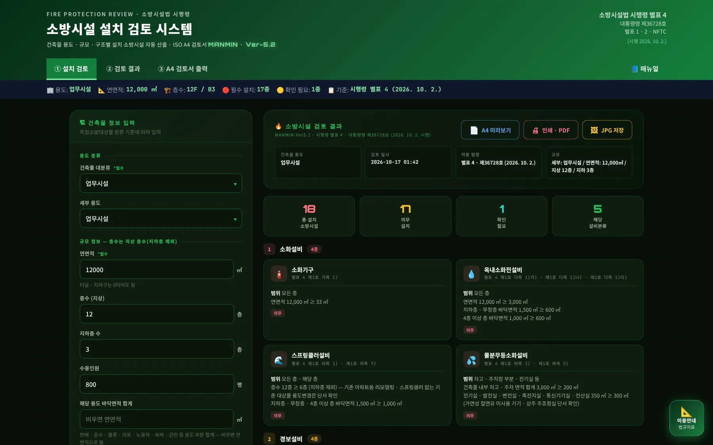
12345- 1탭 3개
- 2📘 매뉴얼
- 3요약 바
- 4입력
- 5결과
1-2. 탭 · 결과 구분
| 구분 | 내용 |
|---|---|
| ① 설치 검토 | 입력 화면 — 용도 · 규모 · 층별 바닥면적 · 주차 · 전기 · 용도별 정보 · 특수 조건 |
| ② 검토 결과 | 소화 · 경보 · 피난구조 · 소화용수 · 소화활동설비별 카드 — 근거 조항 · 적용 범위 · 사유 |
| ③ A4 검토서 출력 | A4 미리보기 · 인쇄 / PDF · JPG 저장 |
| 의무 | 별표 4 조건을 입력값이 충족 — 설치 대상 |
| 확인 | 화재안전기준 · 행정안전부령 · 소방청장 협의로 정하는 대상이거나 단서(24시간 감시 등)가 걸린 항목 — 도면 · 협의로 확인 |
021분 따라하기
예제 A — 업무시설 · 연면적 12,000 ㎡ · 지상 12층 · 지하 3층(입력값은 예시).
- ① 용도대분류 「업무시설」 · 세부 「업무시설」.
- ② 규모연면적 12,000 ㎡ · 층수 12 · 지하층 3 · 수용인원 800명.
- ③ 층별 바닥면적가장 넓은 층 1,100 · 4층 이상 최대 1,000 · 지하 · 무창층 최대 1,500 · 지하층 합계 4,200 · 1 · 2층 합계 2,200 ㎡.
- ④ 주차 · 전기내부 주차 3,000 ㎡(모두 지하) · 전기실 350 ㎡ · 특수 조건 「특별피난계단 · 승강기 승강장」.
- ⑤ 결과「소방시설 검토 실행」 → 18종(의무 17 · 확인 1) — 옥내소화전 · 스프링클러 · 물분무등 · 비상경보 · 자동화재탐지 · 시각경보기 · 비상방송 · 피난기구 · 유도등 · 비상조명등 · 상수도소화용수 · 제연(부속실) · 연결송수관 · 연결살수 · 비상콘센트 · 무선통신보조 등.
- ⑥ A4 검토서「A4 미리보기」 → 「인쇄 · PDF」 또는 「JPG 저장」.
03화면별 기능
3-1. 머리 · 매뉴얼
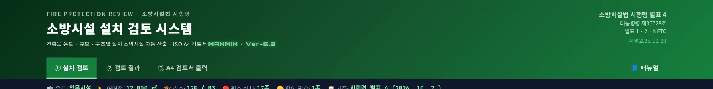
1234- 1도구 이름 · Ver-5.2
- 2📘 매뉴얼 — 탭 막대 끝
- 3별표 4 · 제36728호 · 2026. 10. 2.
- 4탭 3개
탭 막대 오른쪽 끝의 「📘 매뉴얼」은 이 문서를 새 창으로 엽니다(온라인 전용 — 인터넷 연결이 없으면 안내만 표시). 오른쪽 근거 블록은 별표 4의 판 번호와 시행일입니다.
3-2. 용도 분류
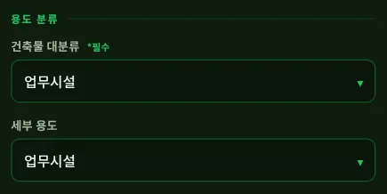
12- 1대분류 31종 (별표 2)
- 2세부 용도
| 항목 | 내용 |
|---|---|
| 대분류 | 별표 2의 특정소방대상물 31종 — 지하가는 지하상가 · 터널로 나눔 |
| 세부 용도 | 판정이 갈리는 구분만 둠 — 노유자 생활시설 · 요양병원 · 정신의료기관 · 물류터미널 · 전통시장 · 대규모점포 · 지하역사 · 관광호텔 · 전기저장시설 · 공동구 등 |
| 용도별 칸 | 대분류를 고르면 그 용도에 쓰는 입력칸 · 조건만 나타남 |
3-3. 규모
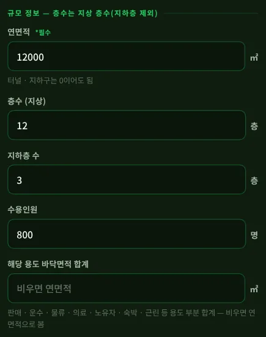
12345- 1연면적
- 2층수 — 지하층 제외
- 3지하층 수
- 4수용인원
- 5해당 용도 면적 — 비우면 연면적
| 칸 | 쓰임 |
|---|---|
| 층수 (지상) | 건축법 시행령 제119조제1항제9호 — 지하층은 층수에 넣지 않음. 6층 · 11층 · 30층 조건에 씀 |
| 지하층 수 | 「지하층의 층수 3층 이상」 조건 · 「지하층을 포함하는 층수」(7층 · 5층) 계산 |
| 해당 용도 바닥면적 | 판매 · 운수 · 물류 · 의료 · 노유자 · 숙박 · 근린 등 「해당 용도로 사용되는 바닥면적의 합계」 — 비우면 연면적 |
3-4. 층별 바닥면적
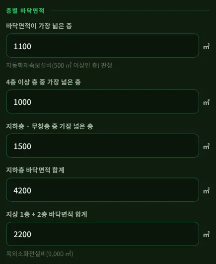
12345- 1가장 넓은 층
- 24층 이상 층 최대
- 3지하 · 무창층 최대
- 4지하층 합계
- 51 · 2층 합계
| 칸 | 쓰임 |
|---|---|
| 가장 넓은 층 | 자동화재속보설비 「바닥면적 500 ㎡ 이상인 층」 |
| 4층 이상 최대 | 옥내소화전 600 · 300 ㎡ · 스프링클러 1,000 ㎡ 층 |
| 지하 · 무창층 최대 | 옥내소화전 · 스프링클러 · 비상경보 150 ㎡ · 비상조명 450 ㎡ · 운수 대기실 제연 |
| 지하층 합계 | 연결송수관 · 비상콘센트 · 무선통신 1,000 · 3,000 ㎡ · 연결살수 150 ㎡ |
| 1 · 2층 합계 | 옥외소화전설비 9,000 ㎡ |
3-5. 주차 · 전기
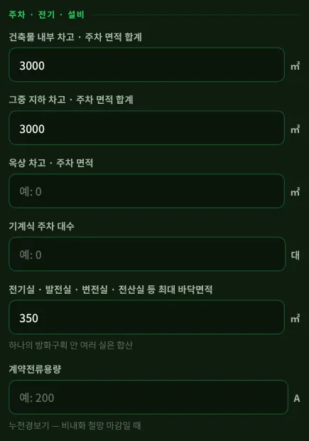
123456- 1내부 차고 · 주차
- 2지하 차고 · 주차
- 3옥상 차고 · 주차
- 4기계식 주차
- 5전기실 등
- 6계약전류
| 칸 | 쓰임 |
|---|---|
| 내부 차고 · 주차 | 물분무등 200 ㎡(50세대 미만 연립 · 다세대 제외) |
| 지하 차고 · 주차 | 200 ㎡ 미만 — 단독경보형 · 비상경보 · 연결살수 / 200 ㎡ 이상 — 자동화재탐지(2026. 3. 1. 시행 개정) |
| 옥상 · 기계식 | 옥내소화전 옥상 주차 200 ㎡ · 물분무 기계식 20대 · 연결살수 20대 미만(지붕 · 외벽) |
| 전기실 등 | 물분무등 300 ㎡(하나의 방화구획 안 여러 실은 합산) |
| 계약전류 | 누전경보기 100 A 초과(비내화 철망 마감) |
3-6. 용도별 정보
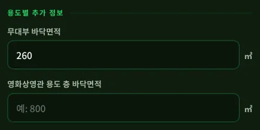
12- 1무대부 면적
- 2영화상영관 층
| 칸 | 쓰임 |
|---|---|
| 무대부 · 영화상영관 | 스프링클러 3)다) · 라) · 3)나) · 제연 1) · 2) |
| 터널 길이 | 옥내소화전 1,000 m · 비상경보 · 비상조명 · 연결송수관 · 비상콘센트 · 무선통신 500 m · 자동화재탐지 1,000 m |
| 특수가연물 배수 | 화재예방법 시행령 별표 2 수량의 배수 — 500 · 750 · 1,000배 |
| 랙 · 천장 높이 | 스프링클러 8)(10 m 초과 · 1,500 ㎡) · 10)라) |
| 가스 탱크 | 상수도소화용수 100 t · 연결살수 30 t |
3-7. 특수 조건
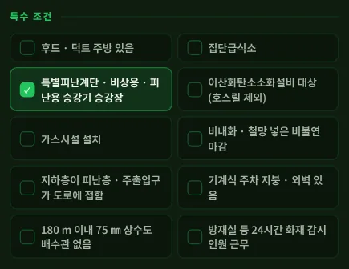
12345- 1주방
- 2특별피난계단 · 승강장
- 3CO2 대상
- 4상수도 배수관 없음
- 524시간 감시
「특별피난계단 · 비상용 · 피난용 승강기 승강장」을 누르면 부속실 제연(제5호 가목 7))이 의무로 나옵니다. 누르지 않아도 11층 이상 또는 지하 3층 이상이면 「확인」으로 표시해 건축법상 설치 대상인지 보게 합니다.
3-8. 결과 머리
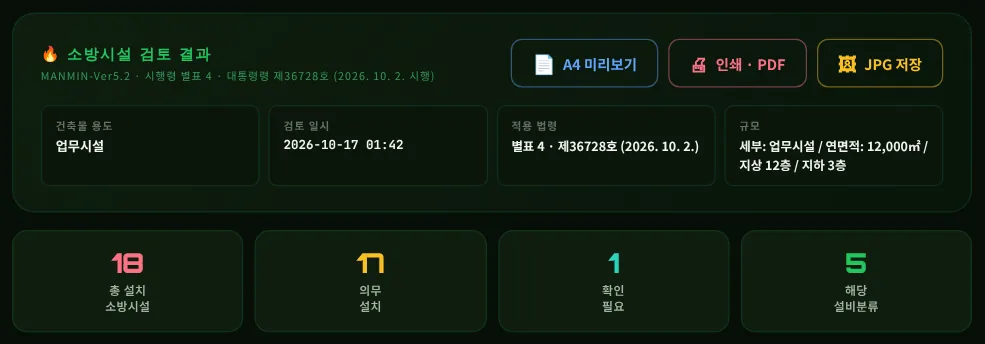
123- 1적용 법령 · 규모
- 2총 · 의무 · 확인 · 분류
- 3A4 · PDF · JPG
3-9. 설비별 결과 카드
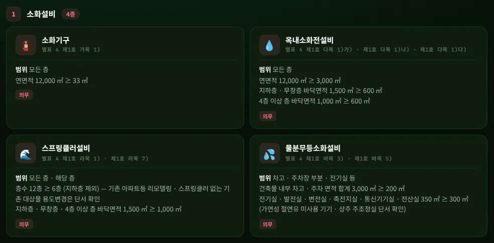
123- 1조항 3개 병기
- 26층 · 1,000 ㎡ 층
- 3주차 · 전기실
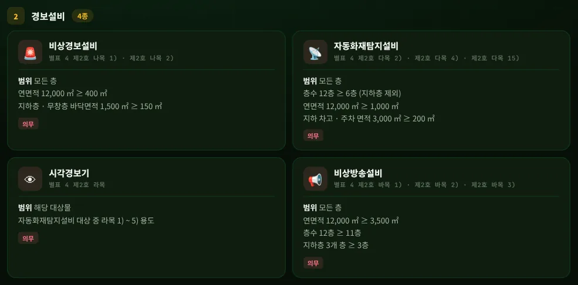
12- 1자동화재탐지
- 2비상방송 — v5.2.0 신설
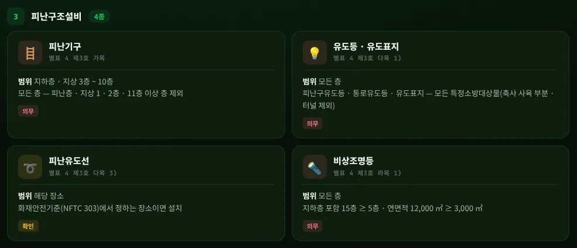
123- 1피난기구 — 1 · 2층 · 11층 이상 제외
- 2확인 — NFTC 장소
- 35층 · 3,000 ㎡
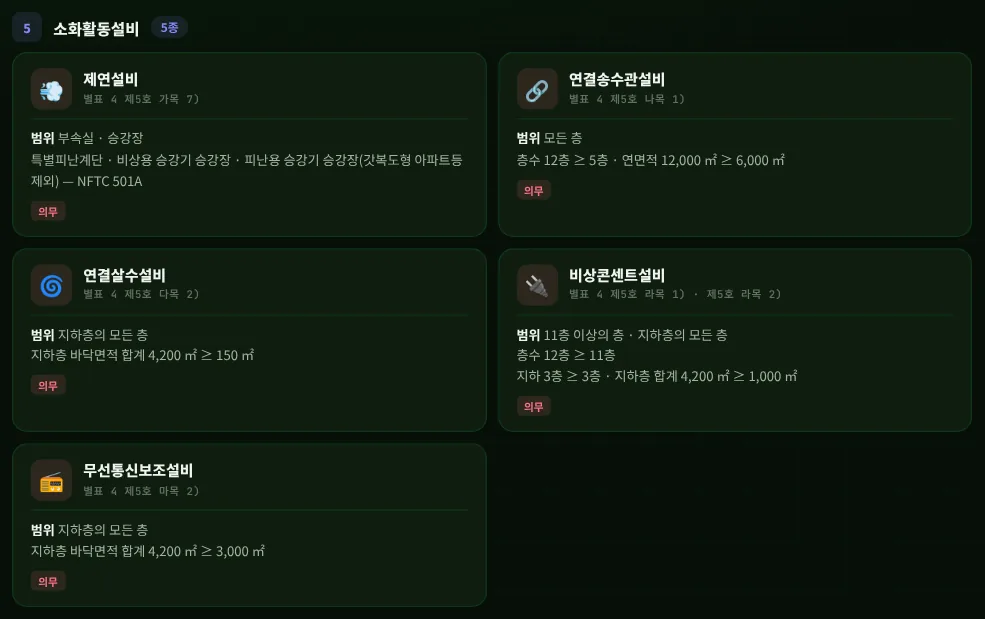
123- 1부속실 · 승강장
- 211층 이상 · 지하 3층
- 3지하층 3,000 ㎡
한 소방시설에 여러 조항이 걸리면 조항 · 사유를 모두 적습니다(예: 옥내소화전 제1호 다목 1)가) · 나) · 다)). 적용 범위는 원문 표현(모든 층 · 해당 층 · 해당 부분 · 11층 이상의 층 · 지하층의 모든 층)을 그대로 씁니다.
3-10. 검토 범위 밖
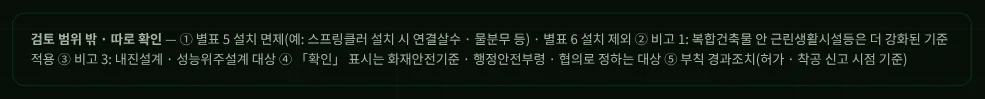
3-11. 사례 — 노유자 생활시설
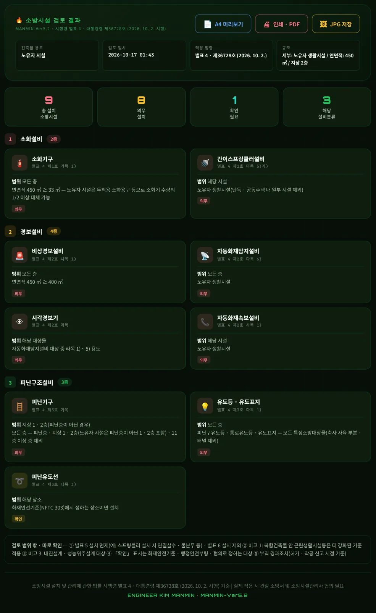
123- 1노유자 생활시설
- 2속보
- 3노유자 1 · 2층
노유자 생활시설은 면적과 관계없이 간이스프링클러(마목 5)가)) · 자동화재탐지(다목 6)) · 자동화재속보(사목 1))가 의무이고, 피난기구는 피난층이 아닌 1 · 2층에도 둡니다(제3호 가목 단서 괄호).
3-12. 사례 — 지상 4 · 지하 2층
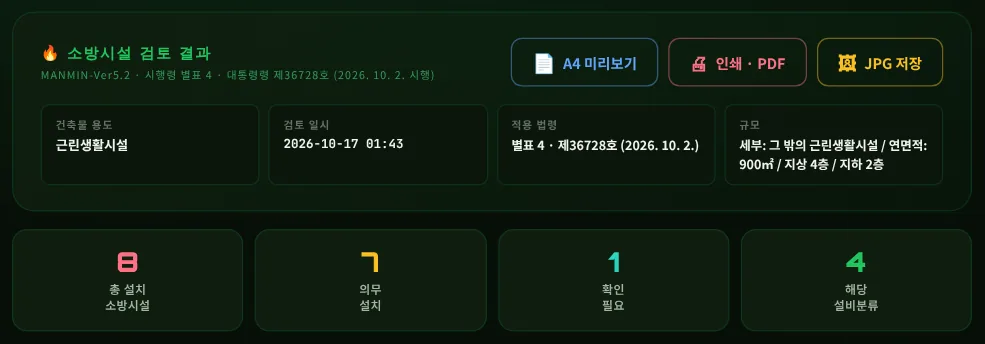
1- 1지상 4 · 지하 2 — 스프링클러 없음
층수는 지하층을 빼므로 4층 — 스프링클러 라목 1)(6층) · 비상조명등(지하층 포함 5층 이상이면서 3,000 ㎡) 대상이 아닙니다. v5.1은 지상 + 지하 6층으로 보아 스프링클러를 의무로 냈고, 인명구조기구 · 비상조명등도 잘못 냈습니다.
3-13. 사례 — 터널
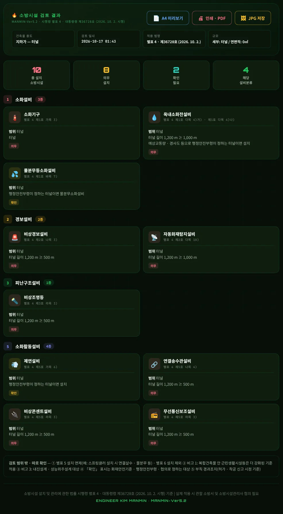
12- 11,000 m
- 2500 m
물분무 · 제연 · 옥내소화전 4)나)는 「행정안전부령으로 정하는 터널」이라 「확인」입니다. 터널은 유도등 · 피난기구 · 비상방송 대상에서 빠집니다.
3-14. A4 검토서
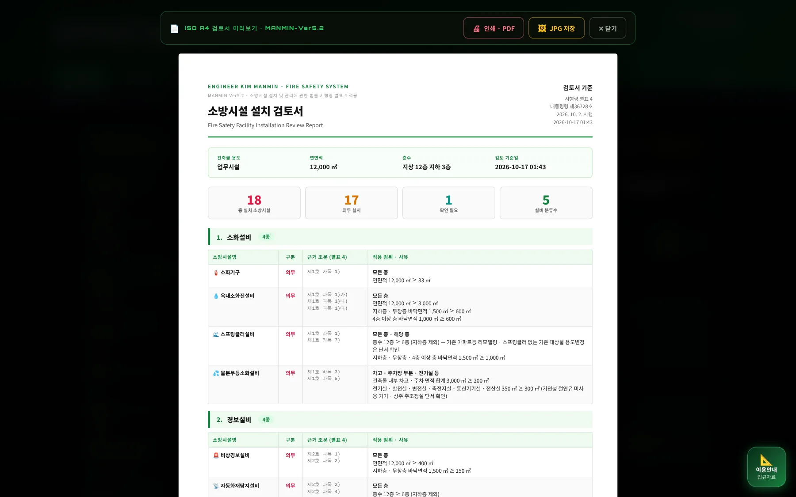
123- 1A4 미리보기
- 2🖨 인쇄 · PDF
- 3🖼 JPG 저장
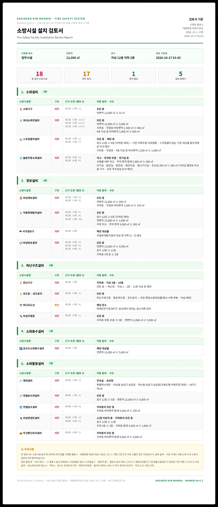
3-15. 이용안내 창
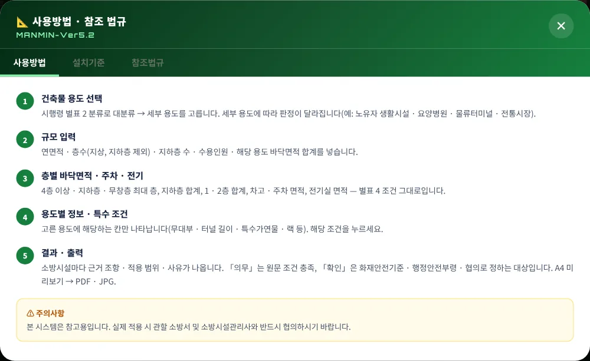
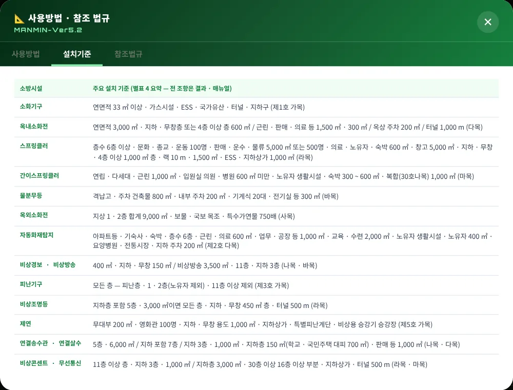
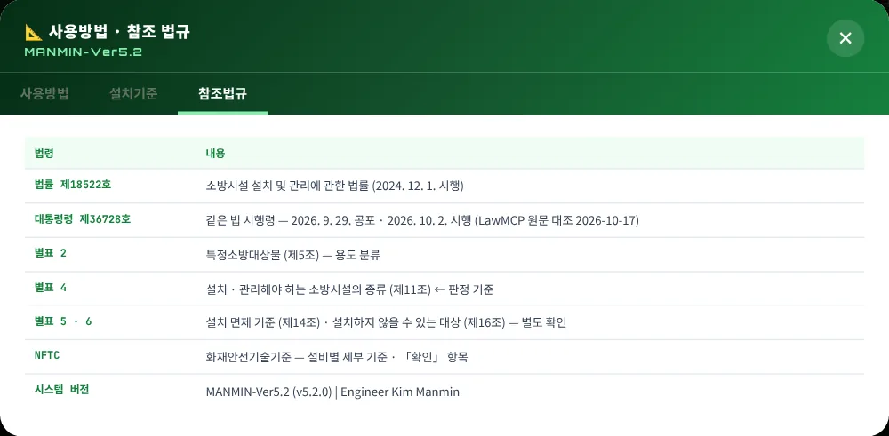
오른쪽 아래 「📐 이용안내 · 법규자료」 버튼으로 엽니다.
3-16. 휴대전화 화면
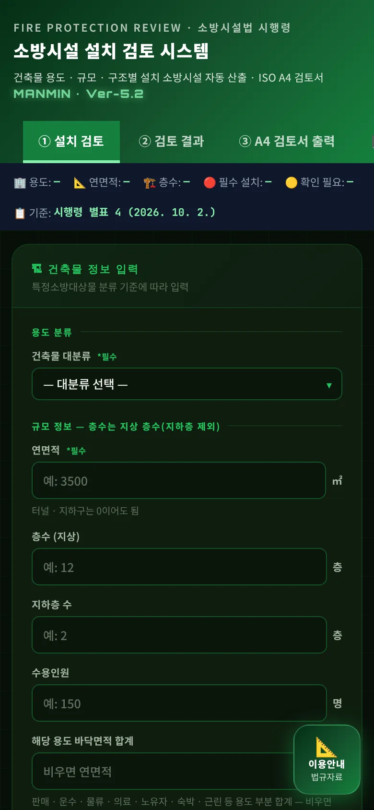
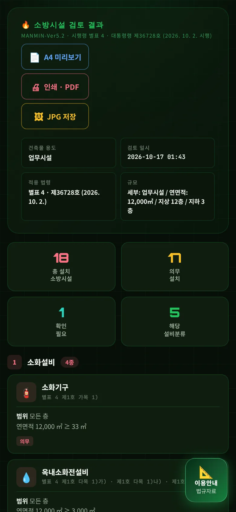
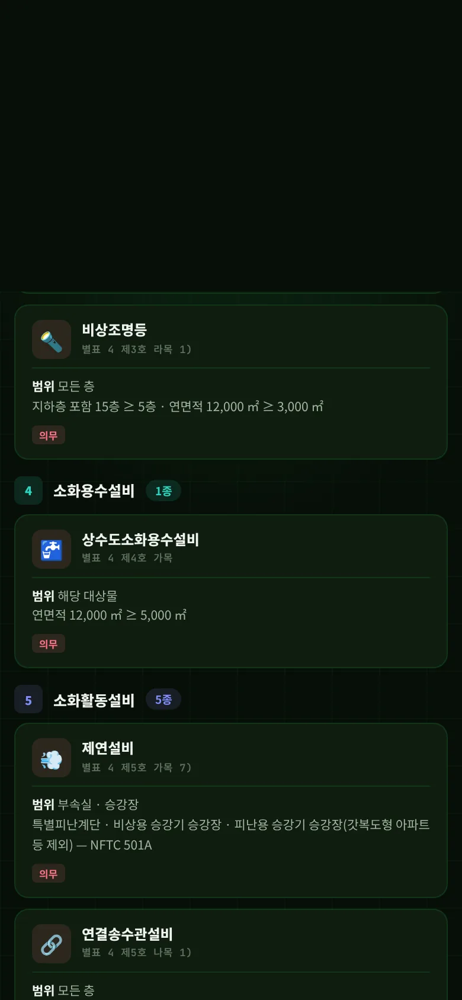
04기준 해설
4-1. 근거 체계
| 구분 | 내용 |
|---|---|
| 법률 | 「소방시설 설치 및 관리에 관한 법률」 법률 제18522호(2024. 12. 1. 시행) — 제12조(특정소방대상물에 설치하는 소방시설의 관리 등) |
| 시행령 제11조 · 별표 4 | 설치 · 관리해야 하는 소방시설의 종류 — 대통령령 제36728호(2026. 10. 2. 시행) · 별표 4 <개정 2026. 9. 29.> |
| 별표 2 | 특정소방대상물 — 용도 분류(이 도구의 대분류) |
| 별표 5 · 6 | 설치 면제 · 설치하지 않을 수 있는 대상 — 판정하지 않음 |
| 적용 시점 | 건축허가등의 동의 · 착공신고 시점의 기준을 적용 — 개정 조항마다 부칙 적용례 확인(예: 지하 주차장 조항은 2026. 3. 1. 이후 허가 신청분) |
4-2. 층수 · 면적 용어
| 용어 | 이 도구의 처리 |
|---|---|
| 층수 | 지하층을 제외한 층수(건축법 시행령 제119조제1항제9호) — 6층 · 11층 · 30층 · 5층 이상(연결송수관 1)) |
| 지하층을 포함하는 층수 | 연결송수관 2) 7층 · 비상조명등 1) 5층 · 인명구조기구 관광호텔 7층 · 병원 5층 |
| 바닥면적이 ○ ㎡ 이상인 층이 있는 것 | 한 층이라도 넘으면 대상 — 층별 최대값으로 판정 |
| 바닥면적의 합계 | 해당 용도 · 지하층 · 1 · 2층 부분을 모두 더한 값 |
| 모든 층 · 해당 층 · 해당 부분 | 설치 범위 — 결과 카드 「범위」에 그대로 표시 |
4-3. 소화설비 (제1호)
| 목 | 대상 요약 |
|---|---|
| 가 소화기구 | 연면적 33 ㎡ · 가스시설 · 전기저장시설 · 국가유산 · 터널 · 지하구 |
| 나 자동소화장치 | 아파트등 · 오피스텔 주방(주거용) · 대규모점포 일반음식점 · 집단급식소(상업용) — 후드 · 덕트 주방 |
| 다 옥내소화전 | 1) 3,000 ㎡ · 지하 · 무창 600 ㎡ 층 · 4층 이상 600 ㎡ 층 / 2) 근린 · 판매 · 운수 · 의료 · 노유자 · 업무 · 숙박 · 위락 · 공장 · 창고 · 자동차 · 국방 · 방송 · 발전 · 장례 · 복합 1,500 · 300 · 300 ㎡ / 3) 옥상 주차 200 ㎡ / 4) 터널 1,000 m / 5) 특수가연물 750배 |
| 라 스프링클러 | 1) 6층 / 2) 기숙사 · 복합 5,000 ㎡ / 3) 문화 · 종교 · 운동 100명 · 영화관 500 · 1,000 ㎡ · 무대부 300 · 500 ㎡ / 4) 판매 · 운수 · 물류 5,000 ㎡ · 500명 / 5) 조산원 · 병원 · 노유자 · 숙박 600 ㎡ / 6) 창고 5,000 ㎡ / 7) 지하 · 무창 · 4층 이상 1,000 ㎡ 층 / 8) 랙 10 m · 1,500 ㎡ / 9) 특수가연물 1,000배 · 방사성폐기물 / 10) 비내화 공장 · 창고 / 11) 교정 · 보호시설 · 유치장 / 12) 지하상가 1,000 ㎡ / 13) 전기저장시설 |
| 마 간이스프링클러 | 연립 · 다세대 · 근린 1,000 ㎡ · 입원실 · 인공신장실 의원 · 조산원 600 ㎡ 미만 · 병원 600 ㎡ 미만 · 정신 · 재활 300 ~ 600 ㎡ · 합숙소 100 ㎡ · 노유자 생활시설 · 노유자 300 ~ 600 ㎡ · 숙박 300 ~ 600 ㎡ · 임차 보호시설 · 복합(30호나목) 1,000 ㎡ |
| 바 물분무등 | 격납고 · 주차 건축물 800 ㎡ · 내부 주차 200 ㎡ · 기계식 20대 · 전기실 등 300 ㎡ · 방사성폐기물 · 터널(행정안전부령) · 국가유산(협의) |
| 사 옥외소화전 | 1 · 2층 합계 9,000 ㎡ · 보물 · 국보 목조 · 특수가연물 750배 — 아파트등 · 가스시설 · 지하구 · 터널 제외 |
4-4. 경보설비 (제2호)
| 목 | 대상 요약 |
|---|---|
| 가 단독경보형 | 기숙사 · 합숙소 2,000 ㎡ 미만 · 숙박 수련시설 100명 미만 · 유치원 400 ㎡ 미만 · 연립 · 다세대(연동형) · 지하 주차 200 ㎡ 미만 |
| 나 비상경보 | 400 ㎡ · 지하 · 무창 150 ㎡(공연장 100) · 터널 500 m · 근로자 50명 · 지하 주차 200 ㎡ 미만 |
| 다 자동화재탐지 | 아파트등 · 기숙사 · 숙박 · 6층 · 근린 · 의료 · 위락 · 장례 · 복합 600 ㎡ · 목욕장 · 문화 · 판매 · 업무 · 공장 등 1,000 ㎡ · 교육 · 수련 등 2,000 ㎡ · 노유자 생활시설 · 노유자 400 ㎡ · 요양병원 · 정신 300 ㎡ · 전통시장 · 터널 1,000 m · 지하구 · 조산원 · 특수가연물 500배 · ESS · 지하 주차 200 ㎡ |
| 라 시각경보기 | 자동화재탐지 대상 중 근린 · 문화 · 종교 · 판매 · 운수 · 의료 · 노유자 · 운동 · 업무 · 숙박 · 위락 · 물류 · 발전 · 장례 · 도서관 · 방송국 · 지하상가 · 리튬1차 전지공장 |
| 마 · 바 | 화재알림설비 — 전통시장 / 비상방송 — 3,500 ㎡ · 11층 · 지하 3층 |
| 사 자동화재속보 | 노유자 생활시설 · 노유자 · 숙박 수련 500 ㎡ 층 · 보물 · 국보 목조 · 입원실 의원 · 조산원 · 병원 · 정신 · 재활 500 ㎡ 층 · 전통시장 — 24시간 감시 인원 근무 시 제외 가능 |
| 아 · 자 · 차 | 통합감시시설 — 지하구 / 누전경보기 — 100 A 초과 · 비내화 철망 / 가스누설경보기 — 가스시설이 있는 문화 · 판매 · 의료 · 노유자 · 수련 · 운동 · 숙박 · 공장 · 물류 · 장례 등 |
4-5. 피난구조설비 (제3호)
| 목 | 대상 요약 |
|---|---|
| 가 피난기구 | 모든 층 — 피난층 · 지상 1 · 2층(노유자 시설의 피난층 아닌 1 · 2층은 설치) · 11층 이상 층 · 가스시설 · 터널 · 지하구 제외 |
| 나 인명구조기구 | 관광호텔 지하 포함 7층 · 병원 5층(방열복 등) · 영화관 100명 · 대규모점포 · 지하역사 · 지하상가 · CO2 대상(공기호흡기) |
| 다 유도등 | 피난구 · 통로유도등 · 유도표지 — 모든 대상(축사 · 터널 제외) · 객석유도등 — 유흥주점(무대) · 문화 · 종교 · 운동 · 피난유도선 — NFTC 장소 |
| 라 비상조명등 | 지하 포함 5층 · 3,000 ㎡이면 모든 층 · 지하 · 무창 450 ㎡ 층 · 터널 500 m — 창고 · 하역장 · 가스시설 · 축사 제외 |
| 마 휴대용비상조명등 | 숙박시설 · 영화관 100명 · 대규모점포 · 지하역사 · 지하상가 |
4-6. 소화용수설비 (제4호)
상수도소화용수설비 — 연면적 5,000 ㎡(가스시설 · 터널 · 지하구 제외) · 가스 탱크 100 t · 폐기물재활용 · 처분시설. 대지 경계선 180 m 안에 지름 75 ㎜ 이상 상수도 배수관이 없으면 소화수조 또는 저수조를 설치합니다(특수 조건으로 선택).
4-7. 소화활동설비 (제5호)
| 목 | 대상 요약 |
|---|---|
| 가 제연 | 무대부 200 ㎡ · 영화관 100명 · 지하 · 무창 근린 · 판매 · 운수 · 숙박 · 위락 · 의료 · 노유자 · 물류 1,000 ㎡ · 운수 대기실 1,000 ㎡ · 지하상가 1,000 ㎡ · 터널(행정안전부령) · 특별피난계단 · 비상용 · 피난용 승강기 승강장(갓복도형 아파트등 제외) |
| 나 연결송수관 | 5층 · 6,000 ㎡ · 지하 포함 7층 · 지하 3층 · 지하층 1,000 ㎡ · 터널 500 m |
| 다 연결살수 | 판매 · 운수 · 물류 1,000 ㎡ · 지하층 150 ㎡(국민주택규모 아파트 대피시설 · 학교 700 ㎡ · 피난층 도로 접 제외) · 가스 탱크 30 t · 지하 주차 200 ㎡ 미만 · 기계식 20대 미만 |
| 라 비상콘센트 | 11층 이상의 층 · 지하 3층 · 지하층 1,000 ㎡ · 터널 500 m |
| 마 무선통신보조 | 지하상가 1,000 ㎡ · 지하층 3,000 ㎡ 또는 지하 3층 · 1,000 ㎡ · 터널 500 m · 공동구 · 30층 이상(16층 이상 부분) |
| 바 연소방지 | 전력 · 통신사업용 지하구 |
4-8. 의무 · 확인
| 구분 | 뜻 |
|---|---|
| 의무 | 입력값이 원문 조건을 충족 — 그대로 설치 대상 |
| 확인 | 원문이 화재안전기준(피난유도선) · 행정안전부령(터널) · 소방청장 협의(국가유산 물분무)로 대상을 정하거나, 단서(24시간 감시 인원 · 승강장 설치 여부)로 빠질 수 있는 항목 |
| MANMIN 적용 | 「병원 용도」(인명구조기구 2))는 종합병원 · 병원 · 치과 · 한방 · 요양병원 · 정신의료기관으로 봄 · 부속 보일러실 · 연결통로(라목 14) · 다목 4))는 본체 결과에 포함된 것으로 봄 |
4-9. v5.2.0 정정 (2026-10-17)
| 항목 | 기존(v5.1) | 정정(v5.2.0) |
|---|---|---|
| 근거 표기 | 시행 2026. 7. 1. | 대통령령 제36728호 · 2026. 10. 2. 시행 |
| 층수 | 지상 + 지하 합계 | 지하층 제외 — 예제 C에서 스프링클러 의무 → 비해당 |
| 피난기구 | 2 ~ 10층 · 400 ㎡ 이상 | 모든 층 — 피난층 · 1 · 2층 · 11층 이상 제외 |
| 인명구조기구 | 지하층 또는 7층 이상 | 관광호텔 · 병원 · 영화관 · 대규모점포 · 지하역사 · 지하상가 · CO2 |
| 비상조명등 | 지하층 · 11층 · 문화집회 100명 | 5층 · 3,000 ㎡ · 지하 · 무창 450 ㎡ · 터널 |
| 제연 | 지하층 1,000 ㎡(용도 무관) · 문화집회 1,000 ㎡ | 용도 · 무대부 · 영화관 · 지하상가 · 승강장 |
| 옥외소화전 · 소화용수 | 연면적 9,000 ㎡ · 소화수조 | 1 · 2층 합계 9,000 ㎡ · 상수도소화용수설비 |
| 신설 판정 | 없음 | 비상방송 · 화재알림 · 누전경보기 · 가스누설경보기 · 휴대용비상조명등 · 객석유도등 · 피난유도선 · ESS · 지하상가 등 |
| 예제 A 결과 | v5.1 17종(옥외소화전 · 인명구조기구 오판 · 비상방송 · 무선통신 누락) | v5.2.0 18종 |
별표 4를 파이썬으로 따로 옮긴 표와 앱 엔진을 경계값 무작위 입력으로 대조해 불일치 0, 오류 주입 4종 모두 검출(manual/_tools/verify_fp.py).
05실무 작업 방법
5-1. 검토 절차
- ① 용도 확정별표 2로 주용도 · 세부 용도 — 복합건축물이면 비고 1(근린생활시설등 강화 기준)도 따로 검토.
- ② 면적표층별 바닥면적 · 지하층 합계 · 1 · 2층 합계 · 용도별 합계 · 주차 · 전기실 면적을 면적표에서 옮김.
- ③ 판정도구로 설치 대상 · 범위 확인 — 「확인」 항목은 화재안전기준 · 행정안전부령 · 협의 자료로 결론.
- ④ 면제 · 제외별표 5 · 6 · 부칙 경과조치 적용 여부 검토.
- ⑤ 설비 설계각 NFTC로 수원 · 펌프 · 감지기 등 산정 — MANMIN 소방 계산서(통합 포털) 활용.
- ⑥ 기록A4 검토서를 건축허가 동의 · 설계 검토 자료에 첨부.
5-2. 문제 해결 · FAQ
| 증상 | 해결 |
|---|---|
| 예전 검토서와 결과가 달라요 | v5.2.0에서 별표 4 원문대로 다시 짰습니다(4-9) — 다시 검토하십시오 |
| 스프링클러가 안 나와요 | 층수는 지하층을 빼고 셉니다 · 4층 이상 · 지하 · 무창층 바닥면적, 용도 면적을 확인하십시오 |
| 부속실 제연이 「확인」으로 나와요 | 특별피난계단 · 비상용 승강기 승강장이 있으면 특수 조건을 누르십시오 |
| 입력칸이 안 보여요 | 용도별 칸은 해당 대분류에서만 나타납니다(예: 무대부는 문화 · 종교 · 운동시설) |
| 화면이 예전 판이에요 | 새로 고침(Ctrl+F5) — v5.2.0부터 캐시 이름이 sobangsiseorak-v7.0입니다 |
부록
A1. 버전 변경 내역
| 버전 | 내용 |
|---|---|
| Ver-5.2 · v5.2.0 (2026-10-17) | 별표 4(대통령령 제36728호) 판정 엔진 FPENG 전면 재작성 · 입력 확장 · 누락 설비 판정 · 근거 표기(4-9) · 「📘 매뉴얼」 · sw v7.0 |
| Ver-5.1 (2026-09-04) | A4 인쇄 · PDF 페이지 분할 오류 수정 |
| Ver-5.0 (2026-08-31 ~ 09-05) | MANMIN 디자인 통일 · A4 규격 · JPG 저장 · sw 정비 |
A2. 용어
| 용어 | 뜻 |
|---|---|
| 특정소방대상물 | 소방시설을 설치해야 하는 건축물 등으로 대통령령(별표 2)으로 정하는 것 |
| 무창층 | 지상층 중 개구부 면적 합계가 바닥면적의 1/30 이하인 층(시행령 제2조제1호) |
| 피난층 | 곧바로 지상으로 갈 수 있는 출입구가 있는 층 |
| 노유자 생활시설 | 시행령 제7조제1항제7호 각 목 시설 — 단독 · 공동주택 안 일부 시설 제외(별표 4 제1호 마목 5)가)) |
| 특수가연물 | 「화재의 예방 및 안전관리에 관한 법률 시행령」 별표 2의 품명 · 수량 — 이 도구는 그 수량의 배수로 입력 |